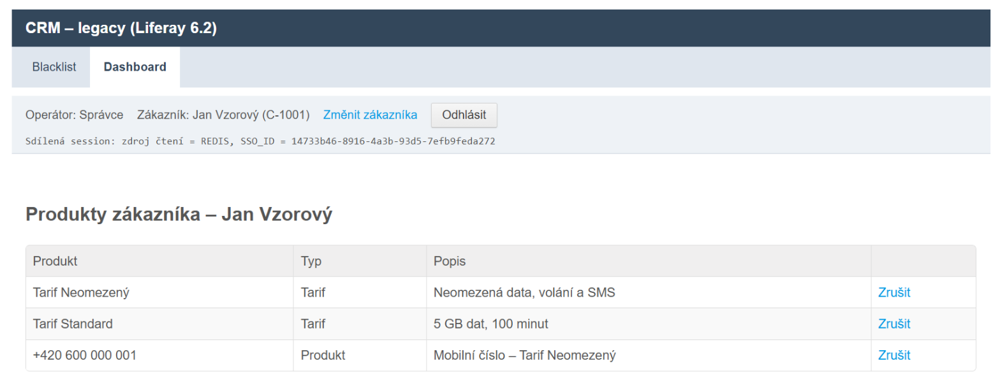
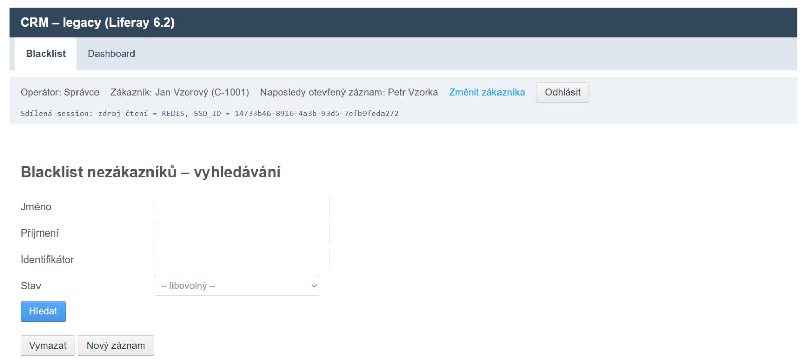
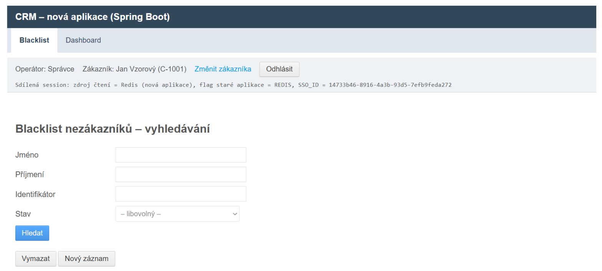
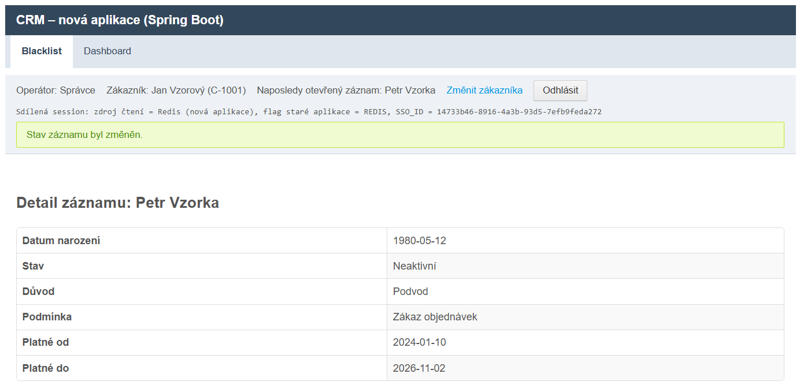
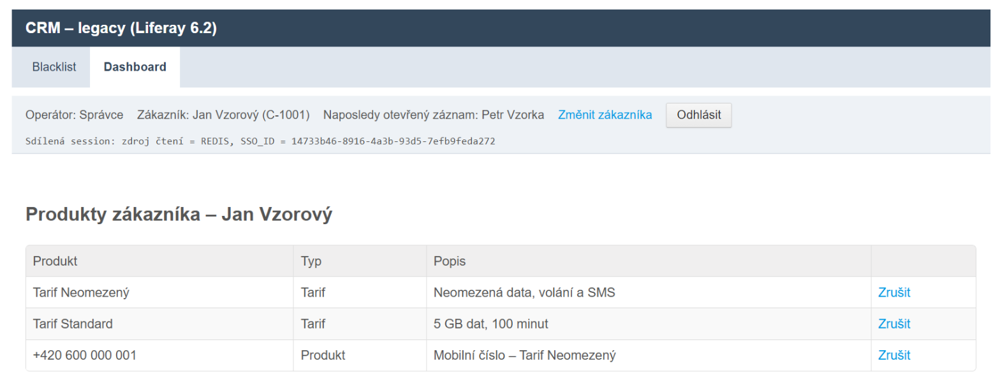
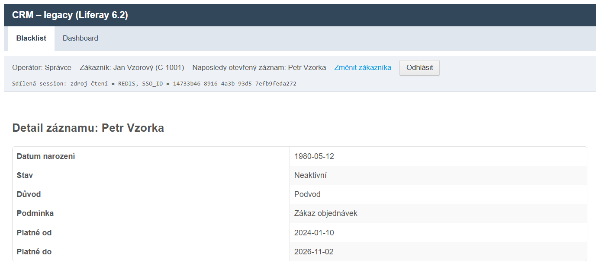

Pilot: modul blacklist
Migrace z Liferay 6.2 na Spring Boot
postup k odsouhlasení
Pro tým stávající aplikace: co se u vás změní, co zůstane, jak to ověřujeme.
Listopad 2026 · ukázky z běžícího dema
Shrnutí
O čem rozhodujeme
1Postupná náhrada. Moduly se přesouvají po jednom do nové aplikace (Spring Boot). Liferay běží dál.
2Malé úpravy u vás. Stará aplikace dostane sdílenou session v Redisu. Controllery a JSP zůstávají.
3Ověřeno a vratné. Stejné testy procházejí na staré i nové aplikaci. Návrat zpět = jedno pravidlo v nginx.
Pro uživatele se nic nemění: stejné obrazovky, texty, přihlášení i oprávnění.
Pilot: blacklist je zmigrovaný, dashboard zůstává v Liferay. Následující ukázky jsou z běžícího dema (Docker).
2
Architektura souběhu
Dvě aplikace za jedním vstupem
- nginx je jediný vstup. Zmigrované adresy posílá do nové aplikace, ostatní do Liferay.
- SSO zůstává. Obě aplikace poznají operátora ze stejné cookie
SSO_ID.
- Redis drží sdílenou session (poslední záznam, kritéria, hlášky) ve stejném JSON.
- Databáze je jedna, se stejnými tabulkami. Data se nemigrují.
3
Ukázka · krok 1
Operátor pracuje ve stávající aplikaci
Liferay 6.2 · /web/crm/dashboard

Dashboard zůstává v Liferay, beze změny.
Ladicí řádek v hlavičce ukazuje, odkud stará aplikace čte session: zdroj čtení = REDIS.
Řádek je jen v demu, v produkci se nezobrazuje.
4
Ukázka · krok 2
Klik na „Blacklist“ otevře novou aplikaci
Původně: Liferay portlet

Nově: Spring Boot · /crm/blacklist/search

nginx přesměruje /web/crm/blacklist na novou aplikaci. Obrazovka, texty i operátor zůstávají stejné,
pozná se to jen podle záhlaví. JSP stránky jsou přenesené 1:1 se stejnými tagy (portal:*, common:*).
5
Ukázka · krok 3
Změna v nové aplikaci: zápis do DB
Spring Boot · detail záznamu

Operátor změní stav na Neaktivní. Nová aplikace zapíše do sdílené DB a do audit logu.
Databáze (Postgres, schéma blacklist)
id | first_name | last_name | state | valid_to
1 | Petr | Vzorka | INACTIVE | 2026-11-02
Audit log (stejný formát v obou aplikacích)
AUDIT event=blacklist.change recordId=1
operator=spravca state=INACTIVE
validTo=2026-11-02
6
Ukázka · krok 4
Stará aplikace vidí sdílenou session
Liferay 6.2 · zpět na dashboard

Hlavička v Liferay ukazuje „Naposledy otevřený záznam: Petr Vzorka“. Ten otevřela nová aplikace.
Redis: hash crm:session:{SSO_ID}
APP_LAST_VIEWED_RECORD
{"id":1,"fullName":"Petr Vzorka"}
APP_BLACKLIST_LAST_CRITERIA
{"lastName":"Vzork", …}
7
Ukázka · krok 5
Stará aplikace čte stejná data
Liferay 6.2 · starý portlet (mimo nginx)

Starý portlet blacklistu ukazuje stav Neaktivní a platnost do 2026-11-02, tedy hodnoty, které zapsala nová aplikace.
Obě aplikace pracují nad jednou databází. Při souběhu ani při návratu zpět se data nepřevádějí.
8
Pro tým stávající aplikace
Co se mění ve staré aplikaci
| Oblast | Úprava | Rozsah v pilotu |
|---|
| Session fasáda |
Zapisuje i do Redisu (JSON). Odkud se čte, určuje přepínač PORTLET / REDIS, přepíná se za běhu bez restartu. |
několik malých tříd pod fasádou (~300 řádků); controllery beze změny |
| Výpadek Redisu |
Zápis se jen zaloguje a čtení se vrátí k PortletSession. Stránka běží dál. |
ověřeno smoke testem |
| Vstup (nginx) |
nginx před Liferay. Zmigrovaný modul = jedno přesměrování. |
1 pravidlo na modul |
| Konzistence session |
Kontrola vlastníka session při změně operátora. Zneplatnění dat v session po změně v nové aplikaci. |
plán, mimo pilot |
| Backend |
API nad stávajícími službami (včetně transakčních operací). Stávající volání se nemění. |
plán, po analýze backendu |
Všechny úpravy přidávají, nic neodebírají. Nasazují se standardním release procesem před přepnutím prvního modulu.
9
Pro tým stávající aplikace
Co zůstává beze změny
- Controllery, JSP a vlastní tagy stávajících modulů
- Přihlášení přes SSO a oprávnění operátorů (ACL)
- Databázové tabulky a datová vrstva staré aplikace
- Formát audit logu
- Vývoj a release stávající aplikace během migrace
Nová aplikace se přizpůsobuje staré
Tagy portal:* a common:* mají stejné rozhraní, liší se jen implementace (bez Liferay).
Session fasáda dodržuje stejný kontrakt. Klíče v Redisu i formát auditu jsou společné.
Nová aplikace má vlastní cookie CRM_SESSION (path /crm), takže nepřepíše JSESSIONID Liferay.
10
Bezpečnost postupu
Jak ověřujeme a jak se vrátit
Testy shodného chování
E2e testy (Playwright) jsou napsané nad starou aplikací. Beze změny musí projít i na nové.
Kontrolují obrazovku, stav databáze a audit log.
| Scénáře (blacklist) | 7 |
| Stará aplikace | zelené |
| Nová aplikace | zelené |
| Smoke testy souběhu | zelené |
Návrat zpět
- Odebrat přesměrování v nginx: uživatelé jsou znovu ve starém portletu.
- Žádné nasazení, žádný převod dat: DB i session jsou sdílené.
- Přepínač session (
PORTLET/REDIS) se mění za běhu.
Rozdíly se opravují v nové aplikaci, nikdy v testu.
11
Další krok
Prosíme o odsouhlasení
K odsouhlasení
- Postupná náhrada po modulech, souběh za nginx
- Úprava session fasády: zápis do Redisu a přepínač čtení
- Sdílená databáze bez převodu dat
- Testy na staré aplikaci jako podmínka převzetí modulu
Od vás potřebujeme
- Kontrolu úprav session fasády (code review)
- Zařazení úprav do vašeho release procesu
- Spolupráci na scénářích testů pro další modul
- Přístup k backendu a internímu Maven repozitáři
Demo je spustitelné lokálně (docker/build-and-deploy.sh), testy: docker/e2e.sh all.
12